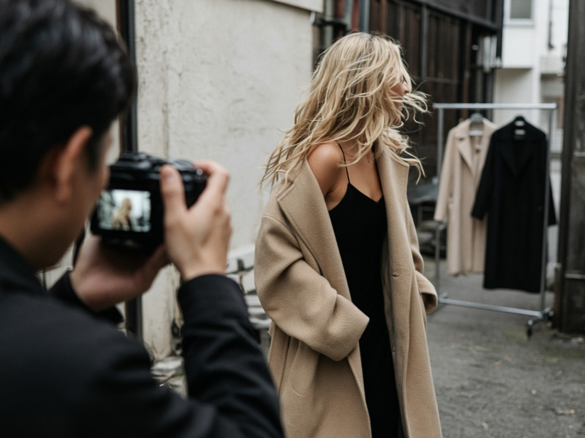

You are meant for more.
You want to be recognised, invited, and chosen. That is a fair goal, and the plan aims at it.
Content, clients, and modelling when it comes. Built around your energy, your aesthetic, and a team that holds the camera, so you don't carry it alone.
You want to be recognised, invited, and chosen. That is a fair goal, and the plan aims at it.
Aesthetic, inspiring, interesting. You share how you see things, not what you think about everything.
What you need is execution: someone to plan the shots, film, and edit.
The yacht. Paris. Full attention, warm energy, making people happy just by talking. That is a real gift.
Your body sets the limit right now. The plan fits inside it, so choosing is built in, not a failure.
Japanese brand events are made for Japanese audiences. Your invitations will come from a different door.
Short clips from things you already do, plus a monthly content day. No separate work for each goal: the same footage opens all three doors.
PR events, gifting, brand partnerships. Brands invite people whose feed looks like their world.
Creative direction projects. Every clip shows your eye for light, styling, and mood.
Casting teams check Instagram. Moving footage shows what a comp card can't.

Anyone can retouch a photo. In video, people see that you actually look like that.Sophia's point, and the heart of this plan
A content day with three looks, or a small hosted brunch. Only if it sounds fun.
Film a few seconds of something already planned. Nothing extra is added to the week.
Nothing new is made. The editor posts a clip that is already finished. This is planned, not a failure.
The bank: always keep about a month of finished clips in reserve. One content day refills it. That is what lets you choose freely without the account going quiet.
Choose the looks, approve the plan, be yourself on the day. Say no to anything that doesn't feel like you.
A monthly moodboard, shot list, and calendar, so you never start from a blank page.
Japanese emails, PR outreach, bookings, and the first read of comments.
Start with Keigo, or a trade shoot with another foreign creator in Tokyo. Hire an English-speaking freelancer once the format works.
Remote, cuts the clips to your look and keeps the bank full. Coconala or Lancers in Japan, or a freelancer abroad.
Yen figures are rough market estimates as of September 2026, not quotes. Spend nothing until two free content days show which formats you enjoy making.

Relaxed and elegant. A walk, a café, a street with good light.
Texture, hands, hair, fabric in motion. The quiet shots brands love.
Your signature: the glamour people remember you for, at blue hour.

Felicia is the queen of makeup transformations, and Halloween is her big night. You don't need her personality, only the idea: one format you are clearly the best at.
A candidate, not a decision. If another format feels more like you, that one wins.
A work email in your bio that Keigo answers, in Japanese when needed. Language stops being the block.
Global fashion and beauty houses' Japan PR teams, when a campaign wants an English-speaking audience.
Luxury hotels, restaurants, and new venues that want international guests to see them.
Swedish and Nordic brands in Tokyo, and the Embassy of Sweden's calendar. Your home crowd, here.
Once a quarter, on a good week: a small brunch for the international crowd you like. It recreates your yacht and Paris moments, gives you something real to share, and shows brands you can fill a room. Later, a brand can sponsor the table.
The client plan still stands: fixed projects, English or Swedish, from home.
Past work with Shiseido, Nylon Japan, and Vogue Japan still counts. The job now is to be easy to book.
Outfits, places, details. No words at all.
One short line. Where you are, what you're wearing.
Recorded alone, redone until you like it. Full control.
Gone in 24 hours. Close Friends first, if you prefer.
Only when step four feels easy, if ever.
A few seconds each, on the phone. The first two clips for the bank. Keigo sets up the work email.
Ask one foreign creator in Tokyo about a trade shoot. Sense Tokyo sends the first moodboard and shot list.
Three looks, half a day, filmed by the trade partner or Keigo. The bank reaches about four weeks.
Keigo drafts a one-page media kit and writes to ten international PR teams, hotels, and Nordic contacts. You only approve the photos.
Film the transformation mid-week. Post it Friday 30 or Saturday 31 October.
Dates are flexible. If a week is low, it moves, and the bank covers the gap.
Your real life, filmed beautifully by someone else, one clip a week. The rooms you want will open from there, at a pace your body agrees with.